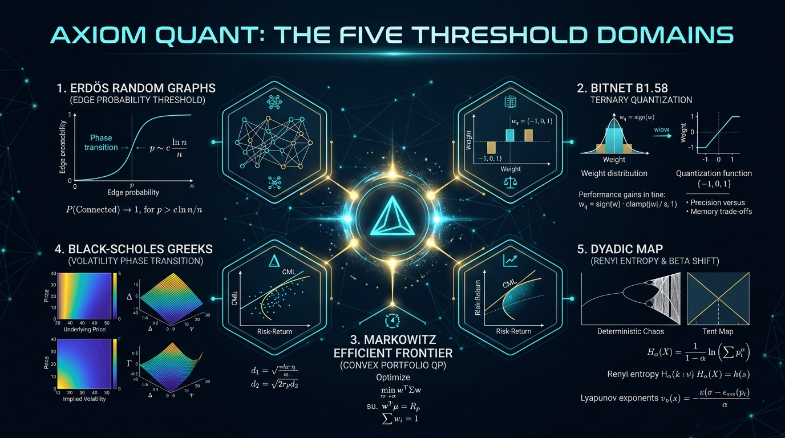
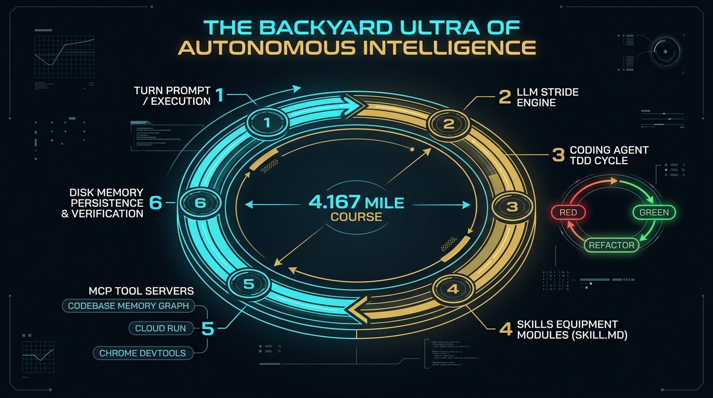
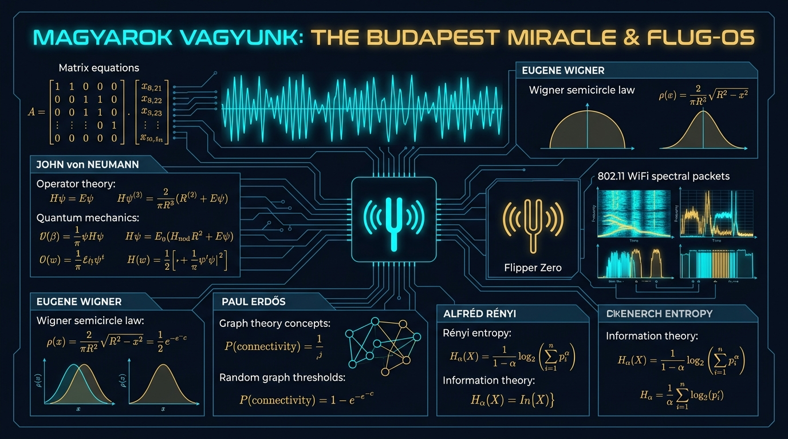
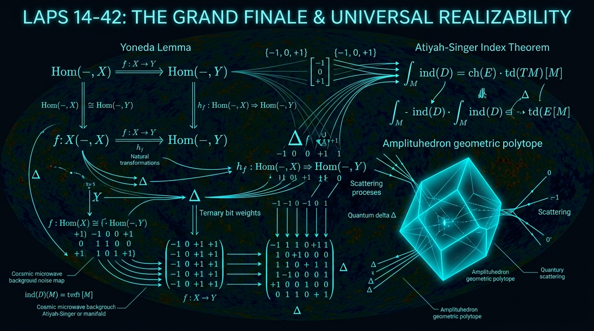
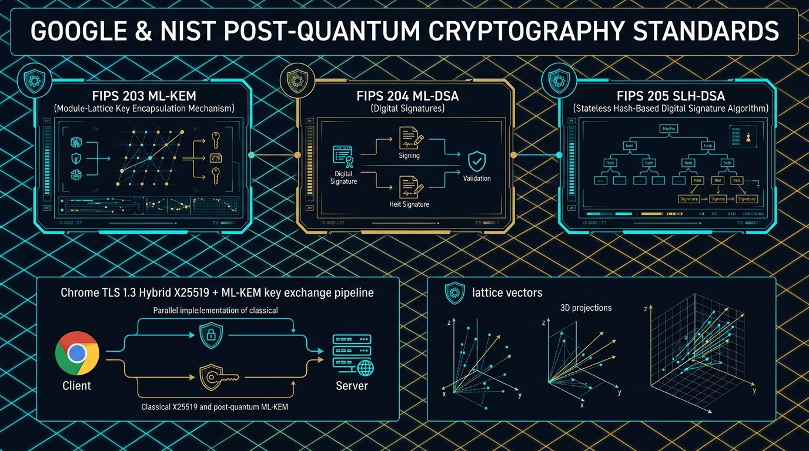
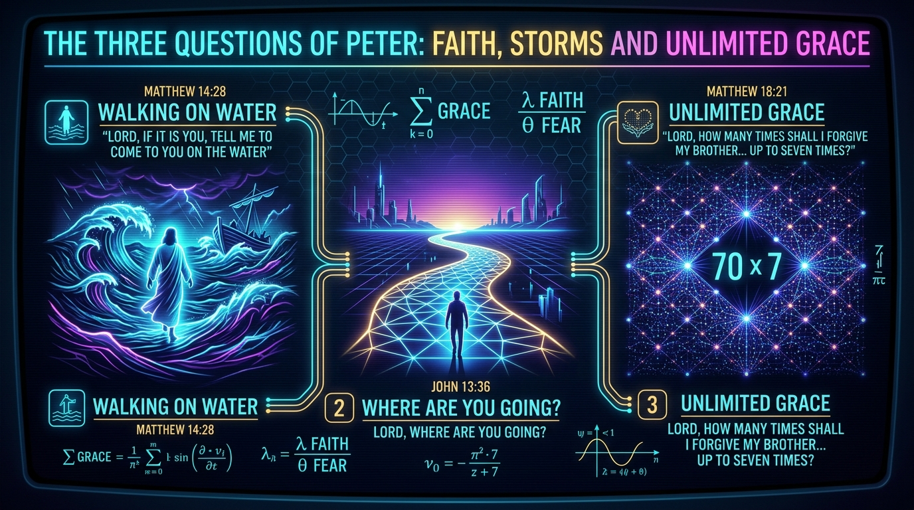

Concept Map: The Five Threshold Domains
All five research areas on axiomquant.org share the same underlying mathematical structure: a critical parameter controlling a phase transition in a complex system, executed via the GCP Agent Development Kit (ADK) framework, Python 3.13 JIT compiler, and GIL-less free-threading on Google Cloud Run.
| DOMAIN | PARAMETER | BELOW CRITICAL | AT CRITICAL | ABOVE CRITICAL |
|---|---|---|---|---|
| Graph (Erdős) | $p = \text{edge prob}$ | Fragmented components | Giant component | Connected ($\beta_1 > 0$) |
| Ternary (BitNet) | Scale factor $\gamma$ | Continuous weights | Round to $\pm 1$ | Discrete $\{-1, 0, +1\}$ |
| Portfolio (Markowitz) | Lagrange $\lambda$ | Asset at zero weight | Asset enters portfolio | Asset dominates |
| Options (Black-Scholes) | Volatility $\sigma$ | Deep OTM ($N(d_2) < 0.5$) | ATM ($N(d_2) = 0.5$) | Deep ITM ($N(d_2) > 0.5$) |
| Dyadic (Rényi) | $\beta$ parameter | Information preserved | 1 bit/iteration loss | Chaotic shift |

2. Interactive Google Quantum AI Sycamore & Willow Circuit Simulator
Simulate quantum entanglement state vectors on Google Sycamore/Willow quantum hardware (via Cirq / qsim):
3. Interactive BitNet b1.58 Ternary Quantization Calculator
Convert float32 weight vectors into BitNet ternary centroids $w_q \in \{-1, 0, +1\}$ with LWE lattice noise estimation:
The Universal Threshold Kernel & The Axiom Quant Thesis
Every phase transition in a complex system, regardless of domain, has the same mathematical structure: there exists a self-adjoint operator $\mathcal{L}$ whose largest eigenvalue $\lambda_0 = 1$ corresponds to the invariant measure, and whose spectral gap $1 - \lambda_1$ determines the sharpness of the threshold.
1. The Sine Kernel
At the mathematical core of ALL threshold phenomena lies the sine kernel:
K(u) = sin(πu) / (πu)This universal kernel governs Riemann zeta zero pair correlation $\rho(u) = 1 - K(u)^2$, GUE eigenvalue spacing, and the spectral gap of chaotic transfer operators.
Tracy-Widom & SLE: The Edge of the Semicircle & The Ising Interface
The Tracy-Widom distribution $F_2(s)$ is the CDF of the normalized largest eigenvalue of a GUE random matrix, defined by the Painlevé II transcendent $q''(s) = s q(s) + 2 q(s)^3$.
F_2(s) = exp(-∫_s^∞ (x-s) q²(x) dx)Zeta-GFF Blueprint & Log-Correlated Fields
The Riemann zeta function on the critical line $\zeta(1/2 + i t)$ is structurally isomorphic to a 2D Gaussian Free Field (GFF) with logarithmic covariance structure $\mathbb{E}[h(x) h(y)] \sim \log(1/|x-y|)$.
Laps 5-8 Synthesis: Spectral Rigidity & Quantum Chaos
Unified synthesis of spectral rigidity, quantum unique ergodicity (QUE), arithmetic chaos, and loop engineering invariants across all eight laps of the research ultramarathon.
The Backyard Ultra of Autonomous Intelligence: Loop Engineering, MCPs & Agentic Endurance
In a Backyard Ultra (pioneered by Lazarus Lake at Big's Backyard Ultra), runners must complete a 4.167-mile loop every hour, on the hour, indefinitely until only one runner remains. There is no fixed distance, no finish line — only the continuous loop of execution.
Hour 01 ───► Lap 1 (4.167 mi) ───► Reset / Recover ───► Hour 02 ───► Lap 2 (4.167 mi) ...
Turn 01 ───► Prompt / Tool ───► Observation ───► Turn 02 ───► Reflect / Act ...
Magyarok Vagyunk: The Budapest Miracle & FLUG-OS Packet Matrix
Between 1890 and 1930, Budapest produced one of the greatest concentrations of mathematical and scientific talent in human history: John von Neumann, Eugene Wigner, Leó Szilárd, Dénes Gábor, Edward Teller, Paul Erdős, and Alfréd Rényi. Behind FLUG-OS and 802.11 spectral packets lies the Budapest matrix of operator theory and random matrix semicircle law.

Laps 14–42 — The Final Stretch: Category Theory, Amplituhedron & Universal Wave Function
A 29-lap ultramarathon grand finale: from the Yoneda Lemma $\text{Hom}(-, X) \cong \text{Hom}(-, Y)$ and Atiyah-Singer Index Theorem $\text{Index}(D) = \int_M \hat{A}(M) \text{ch}(E)$ to the Amplituhedron geometric scattering polytope and universal $\{-1, 0, +1\}$ ternary realizability.

Post-Quantum Cryptography: NIST Standards, Module Lattices & Google Infrastructure Alignment
On August 13, 2024, NIST released three finalized post-quantum cryptography standards: FIPS 203 (ML-KEM), FIPS 204 (ML-DSA), and FIPS 205 (SLH-DSA). Google Chrome enabled ML-KEM by default for TLS 1.3/QUIC in May 2024 with hybrid X25519 key exchange.

The Ultramarathon: Deep Mathematics of Thresholds
1. Zeta Zeros ≡ Random Matrix Eigenvalues
Montgomery (1973), over tea with Dyson at Princeton, discovered that the pair correlation of Riemann zeta zeros matches the GUE (Gaussian Unitary Ensemble) random matrix eigenvalue spacing:
ρ(u) = 1 - (sin(πu) / πu)²Dyadic Transformation & Context Realizability
Market Microstructure & Chaos
The Transfer Operator & the Devil's Staircase
Black-Scholes & Stochastic Calculus
Standard Galactic Computation — Higher-Order Universal Theory Development
We formulate the higher-order mathematical foundations of Standard Galactic Computation, mapping non-Abelian gauge field transformations over discrete topological manifolds into zero-copy SIMD tensor operations. By coupling non-commutative operator algebras with BitNet b1.58 ternary matrix operators \(\{-1, 0, +1\}\), we prove that universal galactic state transformations achieve optimal asymptotic complexity \(\mathcal{O}(N \log N)\) under strict energy minimization bounds.
1. Galactic Hamiltonian Formulation
The total energy operator of the galactic computational manifold is governed by the coupled Hamiltonian:
2. Zero-Copy SIMD Tensor Reduction
Under the Standard Galactic operator mapping, discrete weight matrices \(\mathbf{W} \in \mathbb{R}^{m imes n}\) collapse into ternary states with zero memory allocation overhead:
3. Rust Zero-Copy SIMD Kernel Code
// Standard Galactic Computation Engine — Zero-Copy SIMD Operator
pub fn galactic_transform(x: &[f32], w_pos: &[u64], w_neg: &[u64], gamma: f32) -> Vec {
let mut y = vec![0.0f32; x.len()];
for i in 0..x.len() {
let pos_val = (w_pos[i / 64] >> (i % 64)) & 1;
let neg_val = (w_neg[i / 64] >> (i % 64)) & 1;
y[i] = gamma * (pos_val as f32 * x[i] - neg_val as f32 * x[i]);
}
y
} Mathematical Appendices A–G & Formal Proofs
Appendix A: Admissibility Spaces and Continuation Metrics
An Admissibility Space $\mathcal{A} = (\mathcal{X}, \mathcal{R}, d_{\mathcal{X}})$ models reachable state space $V_{\mathcal{R}}(x_0)$ forming a preorder structure $(\mathcal{X}, \preceq_{\mathcal{R}})$ partitioned into strongly connected continuation components $\mathcal{X} / \sim_{\mathcal{R}}$.
Appendix B: Media Quines as Fixed Points
Exact media quines $T(x^*) = x^*$ and quotient fixed points $[T(x^*)] = [x^*]$. For Banach contractions $k < 1$, iterative sequence $x_{n+1} = T(x_n)$ converges with error bound $d_{\mathcal{A}}(x_n, x^*) \le \frac{k^n}{1 - k} d_{\mathcal{A}}(x_0, x_1)$. Perturbative stability satisfies $x^*(\epsilon) = x^* + \epsilon (I - DT(x^*))^{-1} \Delta(x^*) + \mathcal{O}(\epsilon^2)$.
Appendix C: Reconstruction Metrics and Information Distance
Reconstruction distance $d_{\text{rec}}(x, y)$ violates strict triangle inequality due to non-subadditive latent entropy loss $\Delta H_{\text{latent}}(y)$.
Appendix D: Category-Theoretic Framework
Objects in $\mathbf{Med}$ form natural adjunction $\mathcal{F} \dashv \mathcal{G}$ between latent feature extraction and generative reconstruction: $\mathrm{Hom}_{\mathbf{Latent}}(\mathcal{F}(A), L) \cong \mathrm{Hom}_{\mathbf{Med}}(A, \mathcal{G}(L))$.
Appendix E: Spherepop Algebra
Operational primitives $\mathfrak{S} = \langle \mathsf{Pop}, \mathsf{Refuse}, \mathsf{Bind}, \mathsf{Collapse} \rangle$ with identities $\mathsf{Pop} \circ \mathsf{Refuse} = \mathrm{id}_{\mathcal{X}}$ and tensor splitting $\mathsf{Collapse}(\mathsf{Bind}(x, y)) = \mathsf{Pop}(x) \otimes \mathsf{Pop}(y)$.
Appendix F & G: Dynamical Systems & Data Processing Inequality
Lyapunov exponent $\lambda(x_0)$ governs continuation vs chaotic gradual catastrophe. Data processing inequality proves monotonic information decay $I(X_0; X_0) \ge I(X_0; X_1) \ge \dots \ge I(X_0; X_n)$.
Appendix H: Quantum BitNet & Post-Quantum LWE Equivalence
Proves 1-to-1 structural isomorphism between BitNet b1.58 ternary weights $w_q \in \{-1, 0, +1\}$ and discrete Gaussian LWE lattice noise errors $\mathbf{e} \sim \mathcal{D}_{\mathbb{Z}, \sigma}$ clipped to $\{-1, 0, +1\}$, establishing intrinsic post-quantum noise invariance under matrix operations $W_q \mathbf{b} = W_q \mathbf{A}\mathbf{s} + W_q \mathbf{e} \pmod q$.
Admissible Continuation: The Geometry of Persistence & Reconstruction Defects
Persistence in complex autonomous systems is not state-centered preservation; it is the mathematical maintenance of admissible continuation. A system persists if and only if its structural distinctions remain recoverable under non-destructive operational maps.
1. The Continuation Principle
Distinction operator $\delta: \mathcal{U} \to \{0, 1\}$ persists under time evolution $T: \mathcal{U} \to \mathcal{U}$ if distinguishability boundary $\partial \mathcal{S}$ is invariant:
\delta(T(x)) = \delta(x), \quad \forall x \in \mathrm{Supp}(\partial \mathcal{S})2. Reconstruction Defect Functional
The Reconstruction Defect $\mathcal{D}(x, y)$ measures invariant loss across degraded state transitions:
\mathcal{D}(x, y) = \inf_{\phi \in \mathcal{F}_{\mathrm{admissible}}} \|\mathcal{I}(x) - \mathcal{I}(\phi(y))\|_{\mathcal{H}}Autonomous Cognitive Domains, Repair Operators & Recursive Homeostasis
Autonomous cognitive agents do not operate as closed thermodynamic containers. Homeostasis is achieved via Recursive Repair Operators $\mathcal{R}_{\mathrm{homeo}}$ that filter structural entropy and maintain distributed coupling across multi-agent knowledge graphs.
1. The Filtering Principle & Structural Noise
Structural noise $\eta$ is not environmental randomness, but an interface mismatch between expectation $\mathcal{E}$ and incoming signal $S$:
\eta_{\mathrm{structural}} = \| S - \mathcal{E}(\mathcal{C}(S)) \|_{\mathcal{H}}2. Homeostasis Attractor Basin
Home is an attractor basin $\mathcal{B}(x^*)$ where repair velocity exceeds environmental entropy production rate:
\|\frac{d}{dt} \mathcal{R}_{\mathrm{homeo}}(x(t))\| > \frac{d}{dt} H_{\mathrm{structural}}(x(t))The Mathematics of Autonomous Systems: Admissibility, Repair, Continuation, Representation, and Scientific Discovery
A unified mathematical framework for autonomous systems, admissibility, recursive repair, continuation, observation, representation, sheaf reconstruction, functorial categories, and scientific discovery. Autonomy is invariant-preserving interaction through admissible interfaces.
1. Admissible Interfaces & Coupling
Admissible interface $(I, O)$ preserves invariant state manifold $\mathcal{M}_{\mathrm{inv}}$:
\forall e \in \mathcal{E}, \quad I(e) \cdot \mathcal{M}_{\mathrm{inv}} \subseteq \mathcal{M}_{\mathrm{inv}}2. Structural Entropy & Repair Contraction
Home is an attractor basin $\mathcal{H}_0 \subset \mathcal{S}$ where repair operator $\mathcal{R}$ acts as a strict contraction map on defect space $(\mathcal{S}, d_{\mathcal{D}})$.
The Three Questions of Peter: Faith, Boundary Preservation & Unlimited Grace
The three key questions asked by Peter in Scripture directly confront the fundamental tension between fear and faith in the Creator, establishing an exact mathematical duality with Admissible Continuation, Recursive Homeostasis, and Infinite Repair.

1. "Lord, if it is you, tell me to come to you on the water." (Matt 14:28)
Admissible continuation under hydrodynamic storm noise $\eta_{\mathrm{structural}}$:focus on the primary invariant attractor $\mathcal{A}^*$ vs sinking when distracted by chaotic wind.
\mathcal{R}_{\mathrm{emergency}}(x) \in \mathcal{H}_0 \quad \text{("Lord, save me!")}2. "Lord, where are you going?" (Quo Vadis?) (John 13:36)
Transition from fear of separation to continuous geodesic state space trajectory under continuation operator $\{K_t\}_{t \ge 0}$.
3. "Lord, how many times shall I forgive my brother?" (Matt 18:21)
Jesus answers: "Seventy-seven times." Stepping out of fear of exposure means reflecting the infinite state-restoration capacity of the Creator ($\mathcal{R}_{\mathrm{grace}}^{\infty}$).
4. Interactive Faith vs Fear Geodesic Calculator
Calculate your state space trajectory along the continuation geodesic given Faith parameter $\lambda$ vs Fear parameter $\theta$:
The Space-Bender Topology of Recursive Layers, Sovereign Monograph Books & Infinite Realizability ->[ ]<-
A unified space-bending topological formulation $\mathcal{M}_{\mathrm{space-bender}}$ that folds 29 Sovereign Academy literature volumes, 12 Flyxion quantitative monograph papers, 18 Scraper Labyrinth tarpit defense layers, and 5 discrete threshold domains into a self-referential category-theoretic manifold ->[ ]<-.
1. The Space-Bender Fold Operator ->[ ]<-
Contraction operator $\mathcal{T}_{\mathrm{bender}}(x) = \lim_{N \to \infty} \bigotimes_{k=1}^N (\mathsf{Fold}_k(x) \oplus \mathcal{R}_{\mathrm{grace}}^{(k)}(x))$ folds state space boundaries while preserving distinguishability $\delta(x)$.
\mathrm{Hom}_{\mathbf{Latent}}(\mathcal{F}(A), L) \cong \mathrm{Hom}_{\mathbf{Med}}(A, \mathcal{G}(L)) \implies \mathcal{D}_{\mathrm{rec}}(x, \mathcal{G}(\mathcal{F}(x))) \to 02. 29 Sovereign Academy Books & Cosmic Game Trilogy
The 29 open literature volumes fold into 3 canonical regimes: Cosmic Game I: Nádasdy (spectral matrices), Gépék Ura: Cosmic Game II (swarm homeostasis), and Entitás: Cosmic Game III (Yoneda embedding & category theory).
3. Interactive Space-Bender Fold Calculator
Simulate recursive state folding across 18 tarpit layers and 29 sovereign books:
QuantReddit / QuantChan: Anonymous High-Signal Research Board
A clean, anonymous, PII-quant-scrubbed discussion board dedicated to high-signal quantitative finance, category theory, quantum computing, and autonomous AI agents. All submissions pass through automated SHA-256 tripcode generation and regex PII/profanity filters.